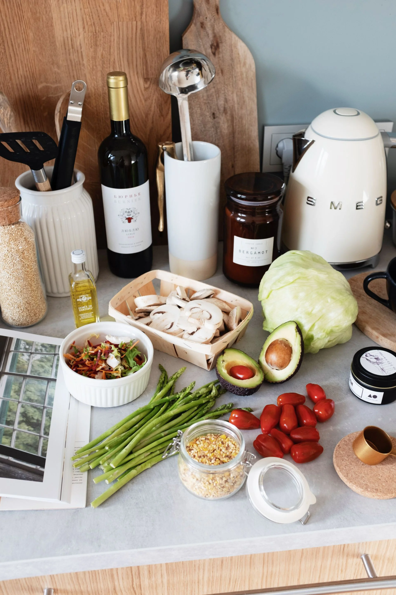

Imagem ilustrativa · não retrata o local ou a equipe
Imagem ilustrativa · não retrata o local ou a equipe01 / Nutricionista · Emagrecimento e hipertrofia
Emagrecer comendo o que você gosta.
Maria Fernanda Milanez. Maria Fernanda Milanez é nutricionista em São José do Rio Preto, com atendimento presencial e online, voltado a emagrecimento, hipertrofia e comportamento alimentar.
- Nutrição
- Emagrecimento
- Online e presencial
 Imagem ilustrativa · não retrata o local ou a equipe
Imagem ilustrativa · não retrata o local ou a equipe02 / Conheça a proposta
Nutrição com olhar para o comportamento alimentar.
Emagrecimento
Acompanhamento nutricional para quem quer emagrecer sem dietas restritivas, com um plano que considera a sua rotina. Prazos e resultados dependem de cada pessoa.
Hipertrofia
Orientação nutricional para quem busca ganho de massa com saúde em primeiro lugar, como relata uma paciente.
Comportamento alimentar
Tema recorrente nos conteúdos da Maria Fernanda, que fala abertamente sobre a relação com a comida e com o corpo.
Presencial e online
Consultas em Rio Preto ou à distância, para quem mora em outra cidade.
Conteúdo diário
No Instagram, ela compartilha receitas, rotina e orientações com linguagem simples.
 Imagem ilustrativa · não retrata o local ou a equipe
Imagem ilustrativa · não retrata o local ou a equipe03 / Trajetória & cuidado
Uma nutricionista que conta a própria história.
A Maria Fernanda Milanez se apresenta como uma nutricionista que superou a compulsão alimentar e a obesidade, e usa essa história para falar de emagrecimento sem dietas restritivas. Atende presencialmente na Vila São José, em Rio Preto, e também online, e mantém um perfil com conteúdo diário. Pacientes descrevem, em avaliações públicas, um atendimento personalizado e focado na rotina.
- Atendimento personalizado, focado na rotina, segundo pacientes
- Presencial em Rio Preto e online
- Emagrecimento e hipertrofia com foco em comportamento alimentar
- Nota 5,0 nas avaliações do Google

Imagem ilustrativa · não retrata o local ou a equipe04 / Seu próximo passo
Vamos conversar?
São José do Rio Preto/SPConversar pelo WhatsApp ↗
Ver mapa do endereço +
Consulte horários, disponibilidade e condições pelo WhatsApp.
Nutricionista · Emagrecimento e hipertrofia